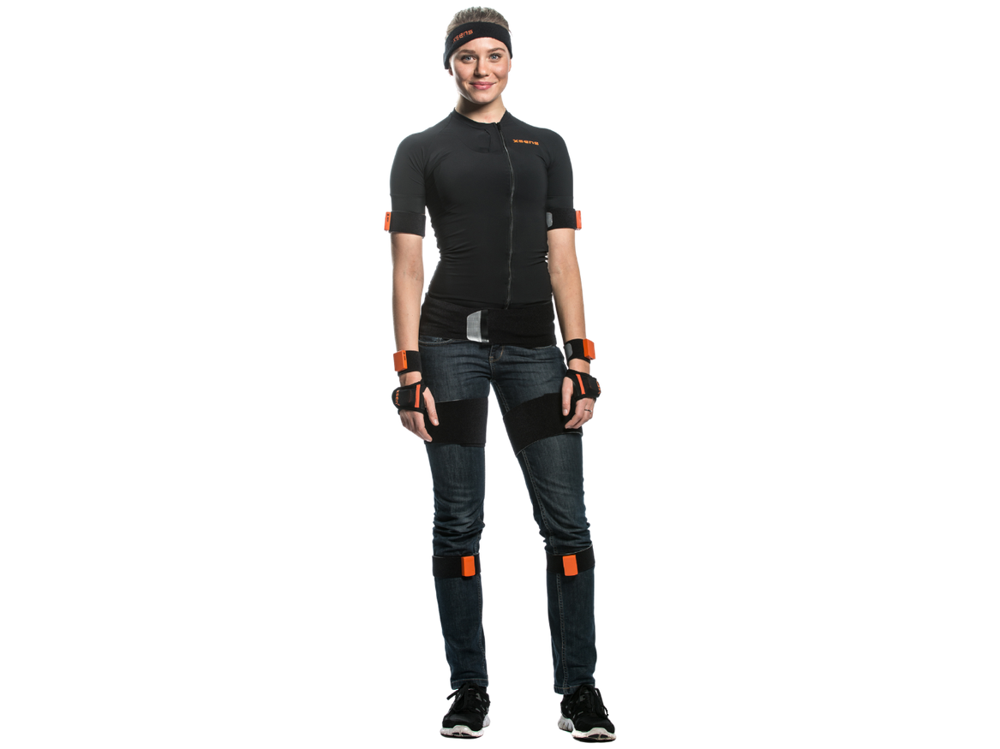

Awinda
Xsens Awinda is a mocap suit from the Netherlands.
Sources retrieved: (A, B)
- Applications
- Indicative price
- Not stated

Manufacturer's own photo.
Specifications
10 of 15 stated 5 not stated
5 fields hidden
How to read the figuresShow guideClose
- not statedNo source
- noyesStated by a source
- 0Reported as zero
- ASource
- A*Source with a caveat (select it)
- CERecords only what the manufacturer states regarding CE marking.
Select a source marker for source details and notes.
Performance2/2 disclosed
Physical1/1 disclosed
Sensing and connectivity4/4 disclosed
Power1/1 disclosed
Software and integration0/2 disclosed
Commercial0/1 disclosed
Compliance & certifications2/4 disclosed
Against the field
Each strip holds every device of this type in the guide that states the figure, one bar per group of values. Further right means a larger figure, not a better device. A taller bar means more devices in that group.
Weight
525g1.16lbOur conversion from 525 g. The manufacturer does not state an imperial figure itself, so the conversion has no source of its own.
4 mocap suits state a weight
1 states a higher figure, 0 a lower one. 2 state only a bound (≥ or ≤) and are not ranked. Log scale: each step along the axis multiplies the value.
Runtime
720minNote: load condition not stated
7 mocap suits state a runtime
0 state a higher figure, 1 a lower one. 5 state only a bound (≥ or ≤) and are not ranked.
Sampling rate
60Hz
7 mocap suits state a sampling rate
3 state a higher figure, 2 a lower one. 1 states a range that includes this figure. Log scale: each step along the axis multiplies the value.
Latency
30ms
6 mocap suits state a latency
0 state a higher figure, 1 a lower one. 4 state only a bound (≥ or ≤) and are not ranked. Log scale: each step along the axis multiplies the value.
Body sensors
17
8 mocap suits state a body sensor count
0 state a higher figure, 6 a lower one. 1 more states exactly the same figure.
Wireless range
50m164ftOur conversion from 50 m. The manufacturer does not state an imperial figure itself, so the conversion has no source of its own.
6 mocap suits state a wireless range
1 states a higher figure, 1 a lower one. 3 state only a bound (≥ or ≤) and are not ranked. Link lies beyond the end of the axis and is drawn at its edge as an open bar.
Notes
“Xsens Awinda is a motion capture system with 17 wireless sensors fitted on the body with adjustable straps.”
Intended use, per the manufacturer. “Teach your robots to move like humans with precise and reliable motion data ready for AI/ML training and teleoperation.”
Sources
One line per source, not per figure: a source has one retrieval date.
- Axsens.com/hubfs/Downloads/Manuals/MVN_User_Manual.pdfSecondary. Retrieved
- Bxsens.com/motion-capture/xsens-mvn-awindaMain source. Retrieved